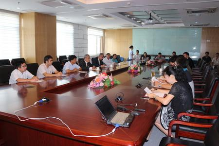

Prof. Dr. Hira Bahadur Maharjan, Vice Chancellor of Tribhuvan University, Nepal, visited ITP (Beijing) on April
29, 2014 to discuss the development of the TPE Kathmandu Center and the joint-efforts needed to promote the
Center into a CAS Center in South Asia. Prof. YAO Tandong welcomed the Nepalese guests and extended gratitude to
their hospitality during CAS delegates’ visit to Nepal from April 7-9.
Prof. ZHU Liping, Deputy Director of ITP, first briefly introduced ITP and the TPE Program, and the education of
young Nepalese scholars at ITP. Prof. LIANG Eryuan briefed the audience about the recent development of
the TPE center and CAS President Bai’s proposal that the TPE center could become a CAS center in South Asia.
The following discussions were focused on how to further develop the TPE Kathmandu Center and efforts needed to
make it the basis for the CAS center in South Asia. To allow for further development of the center, Prof.
Maharjan promised to provide the existing Foreign Student Hostel to the TPE Kathmandu center in its instant
development in the coming two years. He also agreed to have ITP built more buildings and constructions in the
garden and other open field around the hostel for offices, laboratories and observation field. In reciprocate,
ITP will seek funding and manpower support for the infrastructure construction on the TU campus. As part of the
collaboration, ITP will also apply for funding to purchase necessary equipment to conduct academic research
pertaining to geo-sciences and ecology (e.g., biodiversity, ecosystems etc).
Before the meeting, Prof. Maharjan and Mr Krishna P. Adhikary, a visiting professor in the China Three Gorges
University, were introduced to three CAS key laboratories located in ITP, i.e., the Laboratory of Tibetan
Environment Changes and Land Surface Processes, Laboratory of Continental Collision and Plateau Uplift, and
Laboratory of Alpine Ecology and Biodiversity.

TU delegates meeting with ITP scientists